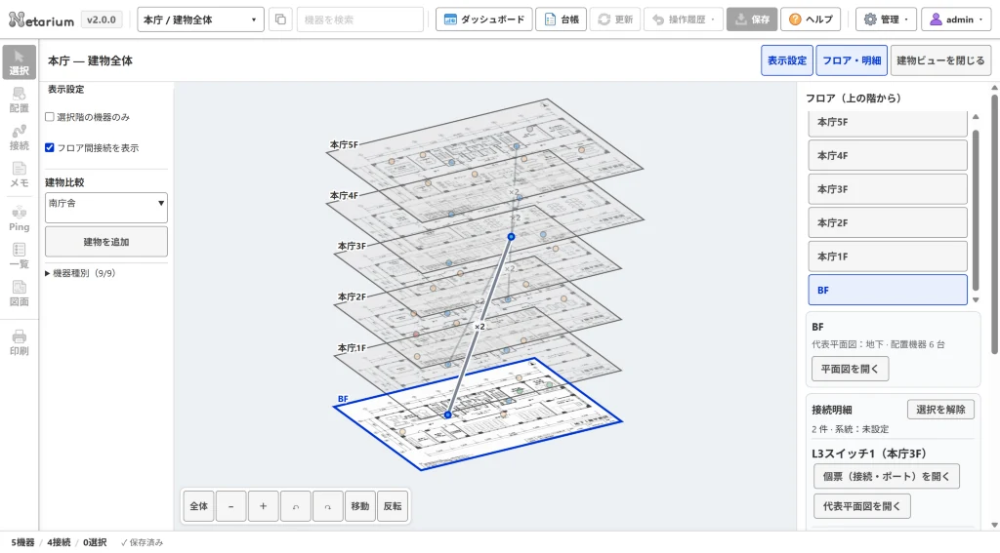
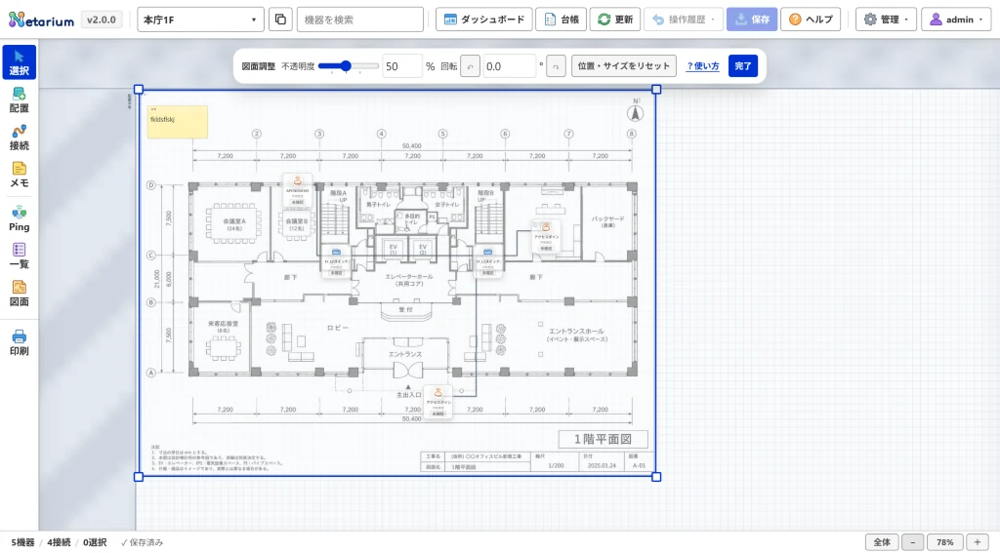
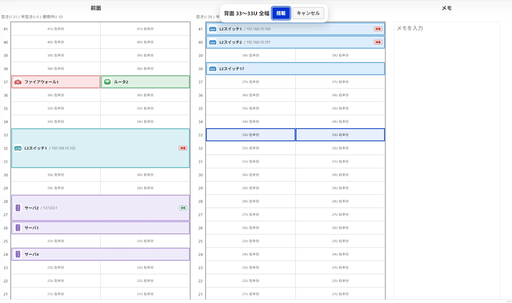

建物・ビュー・ラックの操作ガイド
建物→フロア→ビューの階層管理、2.5D建物ビューでの立体確認と比較、フロア図面（下絵画像）の調整、およびラックビューの搭載・棚板管理を説明します。
建物・フロア・ビューの管理と切り替え
上部バーのビュー検索欄で、建物→フロア→ビューの階層から作業対象の図面を切り替えます。
- ビュー検索欄をクリックすると、現在表示中のビューの経路（または「未分類ビュー」）だけを開いたツリーを表示します。
- 文字を入力すると、折りたたんだ枝も含めてビュー名・建物・フロア・種別で絞り込みます。クリック、または上下キーと Enter で切り替えます。
- 新規登録・編集（管理者のみ）: 上部バーの「管理」→「建物・フロア・ビュー管理」を開きます。
| ビュー種別 | 特徴と用途 |
|---|---|
| 論理構成図 | ネットワークのセグメントや機器間の論理的な接続構成を自由にレイアウトします。 |
| フロア物理配置図 | 庁舎やオフィスの平面図（下絵画像）を配置し、機器やラックアイコンの実位置を管理します。 |
| ラック搭載図 | 19インチラックの前面・背面をユニット（U）単位で管理し、機器搭載や棚板を配置します。 |
建物・フロア・ビューの登録手順（管理者のみ）
- 「建物・フロア・ビュー管理」で建物を登録します。左のツリーで建物を選びフロアを追加すると、その建物に紐づきます（フロア名は B2、1F、RF など自由形式で、上下の順序は「表示順」で決まります）。
- フロアを選んでビューを新規作成するとそのフロアに所属します。既存ビューを移動・追加する場合は、フロア編集欄の「既存ビューを追加・移動」から対象を選びます（別フロアのビューは「他フロアのビューも含める」をオン）。
- 建物ビューで使う図面を明示する場合は、フロア編集欄で「代表物理配置ビュー」に同じフロアの物理配置図を1つ選びます。
- 変更後、右側の「適用」を押すと自動保存されます。未適用入力があるまま別項目へ移るときは、保存・継続・破棄を確認します。
- 削除時の扱い: 建物やフロアを削除しても、所属ビュー・機器・接続は削除されず「未分類」になります。
- 設置フロアとビューの所属フロアの違い: 機器の「設置フロア」とビューの「所属フロア」は別設定です。機器を別フロアのビューに配置しても台帳の設置フロアは変わりません。
- 旧施設・フロア情報: 設置フロアが未分類の機器個票に限り、旧施設・旧フロアの原文を読み取り専用で表示します。
建物ビュー（2.5D表示・フロア間接続・2棟比較）
建物に属する各階の代表物理配置ビューを斜め上から2.5Dで積層表示し、フロア間や建物間の接続関係を確認できます。


利用設定と代表図面の決まり方
- 有効化（管理者のみ）: 「建物・フロア・ビュー管理」で建物を選び、「建物ビューを使用する」にチェックを入れて「適用」します（新規建物の初期状態はオフです。オフに戻しても図面や位置合わせ設定は保持されます）。
- 開き方: ビュー検索欄で対象建物の「建物全体」を選びます。
- 代表ビューの判定: フロア編集で「代表物理配置ビュー」を指定している場合はその図面を表示します。未指定でも物理配置ビューが1件だけなら自動表示します。複数ある場合は未表示となり、案内リンクから代表ビューを指定できます。
視点操作と位置合わせ
| 操作 | 方法と動作 |
|---|---|
| 視点回転・移動・リセット | 空白ドラッグで視点を回転します。左下の「移動」をオンにすると空白ドラッグや矢印ボタンで平行移動、「反転」で回転方向を反転（ブラウザー別保存）、「全体」で初期の視点と位置に戻ります。 |
| 位置合わせモード（管理者のみ） | 右パネルの「位置合わせモード」を開き、選択階のX/Y移動・拡大率（%）・回転（度）を調整します。数値欄の入力確定時とドラッグ終了時に自動保存され、通常閲覧に戻るときは「位置合わせを終了」を押します。未保存入力のまま別操作へ移る場合は保存・継続・破棄の確認が出ます。 |
| 表示中の画面制限 | 通常ビュー用の左パレットと上部バーの更新・保存・リンクコピー・機器検索は無効になります。台帳・管理画面・ログアウトは建物ビューを閉じてから実行します（ヘルプは別タブで開けます）。 |
フロア間接続と表示設定
- パネルの折りたたみ: 上部の「表示設定」「フロア・明細」ボタンで左右パネルを個別に開閉できます。
- 表示フィルター: 左パネルの「表示設定」で「選択階だけ表示」の切り替え、表示する「機器種別」の選択（「すべての機器種別」で一括切替）、「フロア間接続を表示」の切り替えを行えます（開き直すと全階・全種別・接続表示に戻ります）。
- フロア間接続の見方: 代表図面で位置が決まる機器（配置済みラック内の搭載機器を含む）をマーカーで表示し、フロアをまたぐ共通接続を模式線で結びます（実ケーブル経路ではありません。複数接続は「×N」を表示します）。
- 明細と遷移: 機器や接続線を選ぶと関連相手が強調され、右パネル「接続明細」で件数・ポート名・系統を確認できます。「個票（接続・ポート）を開く」でその場で編集でき、閉じた後も建物ビューに留まります。「代表平面図を開く」または個票の「配置先」を選ぶと建物ビューを閉じて対象ビューへ移動します。
2棟を比較する
- 左パネルの「建物を追加」から、建物ビューが有効な別棟を1棟追加します。
- 「基準フロア」で同じ高さに揃える階を切り替えます。「建物間接続を表示」で2棟をつなぐ接続線の表示を切り替えられます。
- 単一表示に戻る場合は「比較を解除」を押します。
注意: 2棟比較の高さは表示順に基づく模式的な並びであり、実際の階高や建物間の距離・方位は表しません。また、比較中は「位置合わせモード」を編集できません。
フロア図面（下絵画像）
フロア物理配置図では、平面図やレイアウト図を下絵画像として登録し、位置・倍率・不透明度・角度を調整できます。


- 「管理」→「建物・フロア・ビュー管理」でフロア物理配置図を選び、未登録時は「図面を登録」、登録済みなら「図面を管理」を押します（表示中の物理配置図から左パレットの「図面」でも開けます）。
- 画像登録: PNGまたはJPEG（30MiB以下、各辺7,000px以下）をアップロードします（長辺4,096px以下へ自動縮小して保存）。
- 図面調整: 図面本体のドラッグで移動、四隅のハンドルで拡大縮小します。
- 不透明度と角度: 上部バーで不透明度（10〜100%）と回転角度（-180.0〜180.0度、0入力で水平復帰）を調整できます。「位置・サイズをリセット」は位置と倍率だけを初期化します。
- 操作確定ごとに自動保存されます。終了するときは上部バーの「完了」を押します。
図面の調整中は接続の経路調整を起動できません。調整を完了してから接続線を操作してください。
図面の登録・差し替え・削除で競合した場合は、「建物・フロア・ビュー管理」で対象を選び、「このビューを再読込」を押してください。ラックの移設先にも競合が表示された場合は、移設先を選んで再読込し、最新の図面を確認してから操作してください。
ラックビューと棚板
19インチラックの前面・背面（1〜60U、規定値42U）における機器搭載と棚板を管理します。


- ビュー検索欄で対象のラック搭載図を開きます（新規作成は「建物・フロア・ビュー管理」の「＋ ラック図」）。
- 前面・背面の空きユニット（U）をクリックまたはドラッグで範囲選択し、ボタンを離すと搭載設定が開きます（同じ側の上下選択はハーフ幅、左右をまたぐ選択は全幅）。
- 左ペインで「既存機器から選択」（名称・IP・種別で絞り込み）または「新しい機器を登録」を行い、右ペインで面・幅・開始U・高さ・奥行き（「半分」／「全体」）を確認して確定します。
- 位置変更・取り外し: 搭載済み機器をドラッグして別の空きUへ移動できます。取り外す場合は機器をクリックして Delete キー、または右パネルの「ラックから外す」を押します（台帳から機器は消えません）。
- 棚板（シェルフ）: 左パレットの「棚板」を押して空きUを選択します。全幅の棚板を作成した後、同じ画面から小型機器（ONU、小型ハブ等）を連続追加できます。
- メモと物理配置図への配置: ラック右側の3領域（上段・中段・下段）へ直接メモを入力できます。ラック自体は物理配置図へ「配置」→「ラック」から1か所配置でき、物理配置図上では搭載機器と他機器・別ラックとの共通接続をラックアイコンを端点として表示します（同じラック内で完結する接続は描画しません）。
- ラックメモも本文は 1000 文字までです。超過した入力はメモ欄に残ります。1000 文字以内に直すまで、その本文は保存されません。